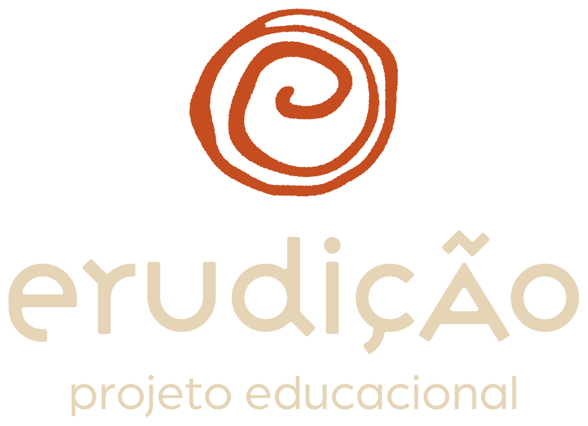
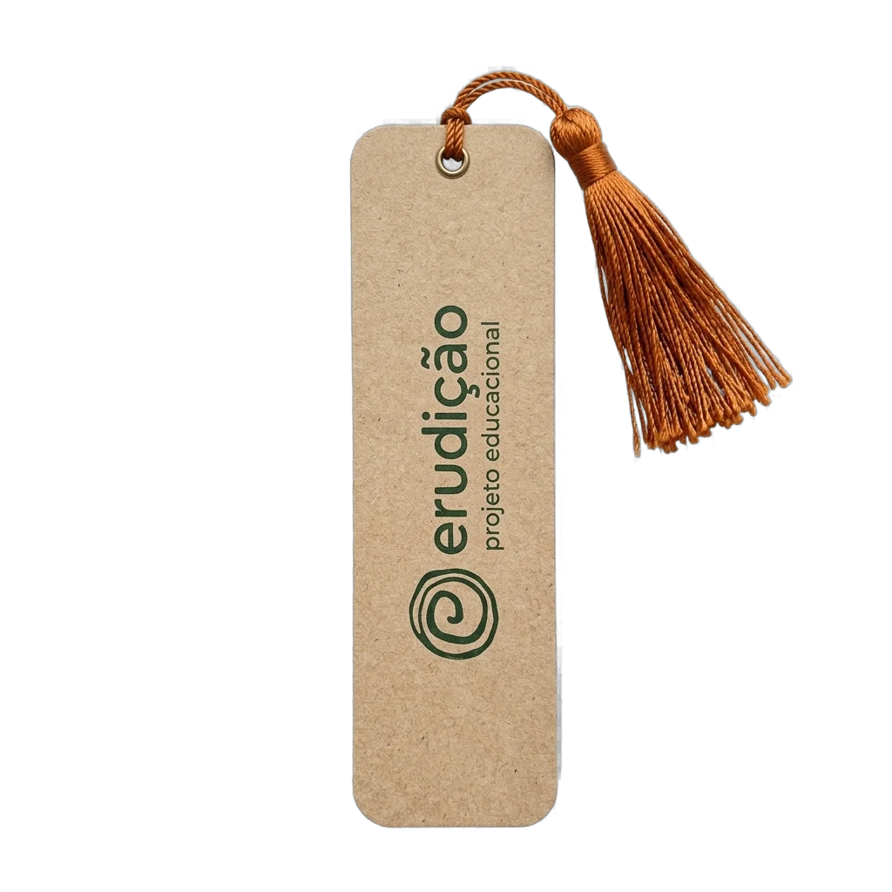
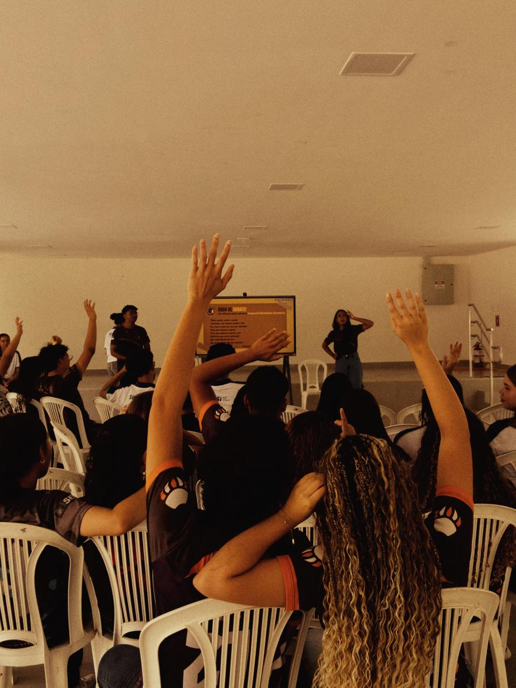
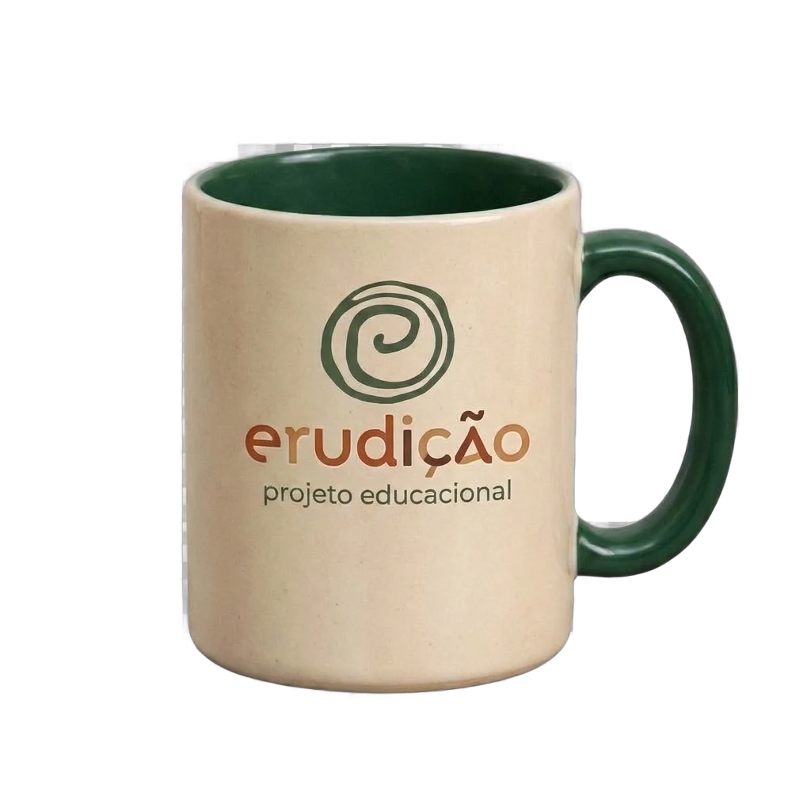
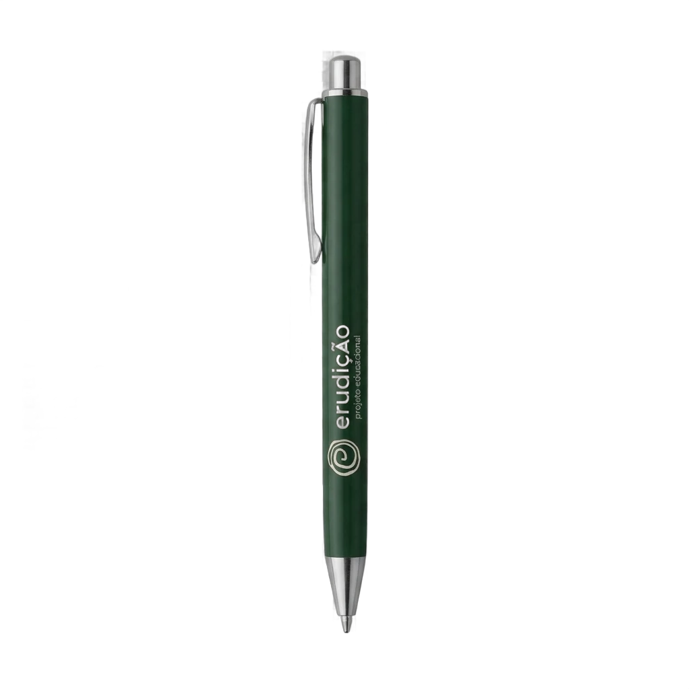
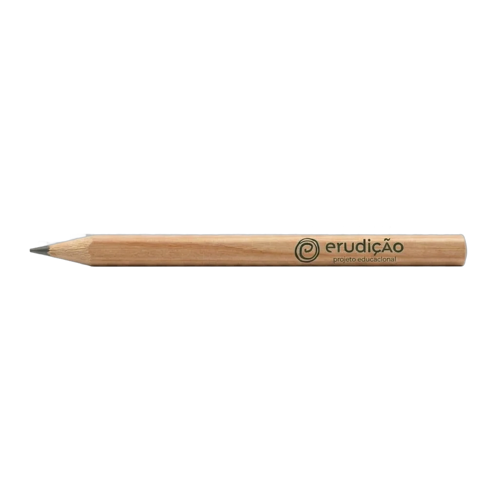

Pesquise temas de redação
Encontre repertórios, referências e materiais para construir argumentos sólidos.

Encontre repertórios, referências e materiais para construir argumentos sólidos.
O Erudição é um projeto educacional voltado à valorização do conhecimento, especialmente das Ciências Humanas, por meio de encontros dinâmicos, pesquisas, debates, repertórios culturais e participação coletiva.
O projeto proporciona aos estudantes um ambiente acolhedor para explorar ideias, construir opiniões e ampliar sua visão de mundo. Mais do que transmitir conteúdos, o Erudição busca o conhecimento como ferramenta de desenvolvimento intelectual, expressão pessoal e transformação humana.


Democratizar o acesso ao saber e desenvolver pessoas capazes de pensar, questionar e transformar a realidade em que vivem.
Tornar-se uma referência em educação humanística e formação crítica, ampliando sua presença em instituições de ensino e desenvolvendo uma proposta que una preparação acadêmica e desenvolvimento humano.



Temas disponíveis